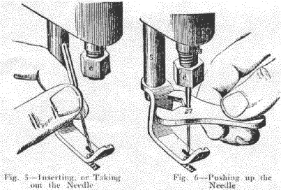
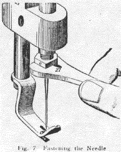
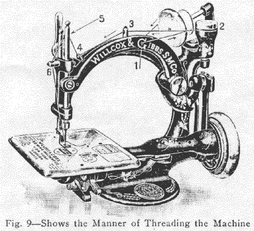
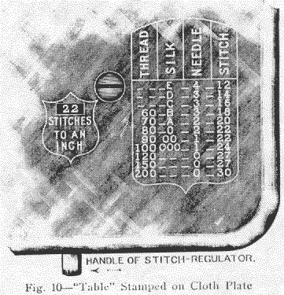
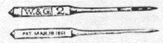

This operation so important, and in other Machines so difficult, is rendered easy and certain by the patented improvement, applied to the Automatic Sewing Machine.

Let Presser Foot down on Cloth Plate by turning Lifter to right or left; raise Needle Bar to its highest point by turning Small Wheel; then holding Needle between thumb and finger (Fig 5), and with groove toward the left, let its point go down into the "Needle Hole" in Plate until you are able to bring shank of Needle directly under the end of Needle Bar. If it does not readily enter, roll it between thumb and finger while pressing it up, and it will soon find its proper position and enter easily. Then push Needle up as far as you can with the fingers; then apply slot in wrench (Fig 6) below the taper on the Needle, and push it up as high as it will go.
Before taking Wrench off, hold Needle again firmly between the thumb and finger, to prevent it slipping down; then place Wrench on Nut (Fig 7), and turn it to right until Needle is held firmly in its place.
Keep the Needle sharp. A dull Needle cannot do good work, and is liable to become bent in going through the cloth.
Let Presser Foot down, and raise Needle Bar to its highest point. Unscrew Needle Bar Nut with Needle Wrench, taking a half turn to the left.
Should Belt become loose after use, and you wish to tighten it, unscrew one end of Belt from Brass Ferrule, and shorten it by cutting off from one-quarter to one-half inch; then place end of Belt on bare floor, or on any smooth hard surface where you can gently roll it under your foot, so as to compress the end which enters ferrule, and screw together as below.
Pass one end between the Pitman and Large Wheel, then pass both ends up through slot in Table. Hold end of Belt (having the ferrule) in left hand; take the other end of Belt between the thumb and finger of right hand, and turn it towards you six full turns -- this will put a twist, or "kink" in Belt. Then push end of Belt hard into ferrule, screwing it in as far as you can by turning it from you which will take the twist out of Belt and leave it straight.
Machines are always sent from our offices properly threaded; therefore, observe Machine carefully when you receive it. The direction of thread is shown by the darts in Fig 9.

When threading, first pull out Spool Pin, and place spool upon it, noticing that spool revolves freely around Pin. Replace Spool Pin. Raise Needle Bar to highest point by turning Small Wheel, and then proceed as follows:
1. Thread from back toward you, through the two staples and hole in Arm known as Pull-off (1, Fig 9).
2. Then carry thread between spool and Automatic Tension, being careful to draw thread between the washers under cap of Automatic Tension (2, Fig 9)
3. Thread from right to left through Thread Pin on top of Frame (3, Fig 9).
*4. From right to left through Wire Staple (4, Fig 9). * NOTE Do not thread through loop of Spring under the staple, unless embroidering.
5. Take thread between thumb and finger of both hands, passing it between Needle Bar and Take-up, and press it from you into opening at top of Take-up (5, Fig 9).
From Fig 10 it will be seen that there is stamped upon Cloth Plate of the Machine a "Table" showing proper size of Needle and length of stitch for each size of cotton or silk. For example: For 80 thread or 0 silk, use a No. 2 Needle, and 22 stitches to an inch.
To left of this "Table" is a slot, surrounded by a shield inscribed "Stitches to an inch". To obtain length of stitch required, move handle of Stitch Regulator until proper number appears through slot. The length of stitch indicated by the "Table" should always be used, as the proper elasticity will then be secured in all seams. A strict adherence to the "Table" will always ensure good and durable work.
When selecting thread or silk for machine sewing, the operator should bear in mind that generally three or four sizes finer than that used in hand sewing is strong enough, and best adapted to the work. For instance, where 60 cotton would be used in hand sewing, use 80 cotton on the Machine. By using 80 or 90 cotton on muslin you will have a seam as strong as the fabric, and a chain so small on underside of garment as to make it almost impossible to detect it after laundering. This rule also applies to finer materials.
The following rules on this subject will be found useful:
For bleached muslin, shirting etc., use ----------- From 80 to 100 white cotton
Dress Making ---------------------------------- From 70 to 100 black cotton, 70 only in colors, 0 or A silk
For tucking cotton or silk ----------------------- From 100 to 200 cotton, 000, 00 silk
For light woollen clothing, flannels etc. ---------- 70 to 90
For heavy woollen clothing --------------------- 60 to 80
For fine linens ---------------------------------- 100 to 150
For fine lawns, nainsooks etc. ------------------ 120 to 200
For embroidering * ---------------------------- E or F silk (* When threading for embroidery, thread through Embroidery Spring. See "Embroidering")
For hemming silk or wool goods --------------- 000 silk
For braiding ----------------------------------- 80 cotton or 0 silk
We recommend the use of Willcox & Gibbs Cotton, and while any good cotton can be used, Willcox & Gibbs Cotton invariably gives the best results.
When colored cottons are required, use Willcox & Gibbs colored Cotton, and in the case of black select one number coarser than called for in the above rules. Colored cotton can be had only in number 80.
The "Table" stamped upon Cloth Plate (Fig 10) shows by number the proper size of needle to be used with each size of thread or silk.
The number is stamped on shank of each Needle.

CAUTION: -- Every Needle made by us is stamped on shank and
All others are worthless imitations and invariably give trouble as well as injure the Machine. Imitations or bent needles will cause loose stitches and breaking of thread.
This important feature of the Willcox & Gibbs Automatic Sewing Machine calls for few words of explanation, as it is entirely self-acting, requiring no attention or skill on the part of the operator, no matter what nature the fabric my be, or what size of thread or silk is required.
No adjustment of he Automatic Tension being required for any size thread or silk, or any kind or thickness of work, it only remains for operator to select thread or silk, and to regulate the stitch, by following the directions on page 13 and the "Table" stamped on Cloth Plate (Fig 10). The operator can then be certain that Machine will start immediately and do perfect work.
The Automatic Tension is not at all liable to get out of order, but will remain perfectly adjusted and self-adjusting, if not meddled with.
We repeat the caution: - Do not Oil the Automatic Tension